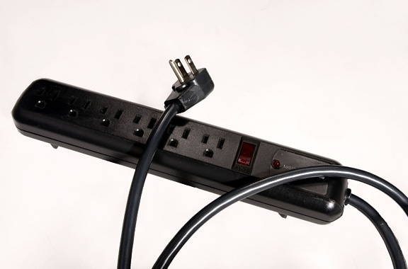

Your go-to guide for surviving (and thriving!) during your first year.
As a former peer mentor, I’ve gathered all the advice, tips, and resources that I used to share with my
first-year students into one place. Whether you’re figuring out what to pack, how to register for classes,
or how to get involved, this guide is here to make the transition less stressful!
ALL THINGS DORMS
Starting with the place you’ll probably be spending the most time in, your dorm will be a space that you
want to keep cozy and personal.
SU has around 20 residence halls and they all offer a different living experience. Although you aren’t
technically able to pick the dorm building you live in, there is a way to narrow the options. Syracuse has
what we call Living Learning Communities (LLCs), which are communities of students who share similar
interests living together. There are a range of interests from being in the Honors Program to wanting to
live with a diverse student body in the Multicultural LLC! As an honors student who lived in the LLC, I
strongly recommend joining one as it is a great way to meet students who share your interests early on.
LLCs put on events for their residents, so take advantage of the fact that you’d be near like-minded
people with the opportunity to attend free events in your building. Personally, I strongly recommend the
Honors LLC in Sadler Hall, but I might be a bit biased!
Depending on what you are interested in, you can indicate that you would like to live in an LLC when you
sign up for housing, and if you get a spot, you were technically able to choose your dorm building! This
page has the list of available LLCs along with the residence hall that you would be living in.
In terms of what to pack for your dorm, this is my list of essentials:
- No more than 7 pairs of shoes – you’ll need 2 pairs of everyday shoes, 1 pair of dress-up shoes, 1 pair of shower shoes, 1 pair of outdoor sneakers, 1 pair of inside shoes, and 1 pair of snowshoes. I don’t recommend bringing any more as these take up a lot of space in your closet and are truly all you need for any occasion.
- A fan – You might be telling yourself that this item can be skipped over since we live in upstate NY, which has a reputation for being very cold. WRONG! The first month or two usually has hot and sunny weather and the dorms do not have AC, so you’ll be glad to have a fan in your room.
- Extension cords – Most dorms do not have many outlets, and it makes it annoying when you want your lamp to be on but also need to charge your phone. Therefore, extension cords are a great way to make charging more accessible and available (just make sure to get a surge protector as some types of cords aren’t allowed)!
- A foldable drying rack – Once you start doing your own laundry, you’ll realize a lot more items of clothing can’t go in the dryer than you initially thought. Having a drying rack for delicate clothing is very handy and it barely takes up any space if it folds.
- Another light source – Whether this is a desk lamp, floor lamp, or LED lights, I recommend getting another light source other than the ceiling light as those are generally not very strong. I may just be a sucker for bright rooms, but my freshman year dorm felt so dim and dull before I got a floor lamp. My personal preference is getting a yellow light bulb to make it feel warmer!
- A water filter – Dorm buildings don’t always have the cleanest drinking water, so getting a BRITA filter or something similar is useful for filling up your bottle in your room!
- A mattress topper – You’ll quickly realize that dorm mattresses are some of the hardest surfaces you’ve sat on before. Getting a mattress topper will be a game changer and you’ll feel like you’re sleeping in a cloud.
- A reusable water bottle – Campus is big and hilly, so you’ll want to stay hydrated. Having a reusable water bottle makes it very easy to do so as there are a bunch of water fountains across campus.
- Memorabilia – Lastly, bring photos, posters, and trinkets that will make your room feel like home! Making your room personal is the first step in feeling comfortable on campus and a great way to have some pieces of family and friends with you.

ACADEMICS 101
Registering for classes can be stressful, especially when MySlice starts crashing from all the traffic. So,
here are my top tips to prepare for registration season:
- Start early - Class information will come out a couple of weeks before actual registration, so I recommend going through all your options as early as possible. This allows you to plan exactly for what you are looking for as well as gives you time to talk to your advisor if you need a second opinion (advisor appointment timeslots fill up VERY fast during this time, so plan ahead).
- Have backups - Students register for classes based on grade level, so as freshman, you unfortunately have last pick. This means that you might not always get your first choice in classes or sections as they fill up fast. Therefore, I recommend having one or two backups ready in your shopping cart so that you’re not missing out on important credits.
- Be ready - Once you have planned everything out, add all your classes to your shopping cart, including your backups, so that you are able to enroll as soon as your registration time opens. Classes fill up fast, so make sure to be on MySlice at least 5 minutes before your appointment. In addition, registration is often in the morning, so if you have a class, it is okay to ask your professor if you can take 5 minutes to register for class on that day!
- Seprate your spaces – Since your new home is a small dorm room, it gets difficult to differentiate between your personal and work spaces. Therefore, I suggest avoiding doing work on your bed and leave that as a place for resting. Even better if you can find other spots on campus to study and separate your spaces more distinctly.
- Attend office hours – Going to office hours regularly allows to have all your questions answered and stay on top of course material, but it also allows you to build a relationship with your professors. When it comes to graduate school or scholarship applications, it’ll be very helpful to have a faculty member who knows you well enough to agree to write you a recommendation letter!
- Track your assignments – There are a lot of deadlines to keep track of in college, so having a place where you write them all down is a great way to stay organized. I personally use a color-coded Excel sheet to keep track of my work as well as how far along I am, but you can also use a physical format if that works better for you!
- Don't procrastinate your assignments – This is a cliché piece of advice you’ll hear often, but it doesn’t make it any less true. Assignments start to pile up and soon enough you have three midnight deadlines. Starting early allows you to decide how long each assignment will take to complete and plan for time to ask for feedback from your professors if needed.
- Take breaks – After a while, the academic routine can take a toll on your mental health, so it is very important that you take breaks and take care of yourself. Make sure that you are leaving time to call home, hangout with friends, and pursue personal hobbies to stay in the right headspace.
GETTING INVOLVED
Outside of classes, my biggest piece of advice for an incoming freshman is getting involved on campus. A
lot of people feel out of place in a new environment, especially when you don’t have a community to
rely on and to keep you busy. Therefore, I strongly recommend signing up for 1-2 student organizations
your first semester. This will give you the opportunity to meet other students with similar interests and
take your mind off work for a couple hours a week. Leadership experiences in clubs are also a great skill
to add to your resume!
SU holds an involvement fair in the first 3 weeks of each semester where all the clubs on campus are
present and tell you how you can join them. This is the main event that you should go to your first
semester, and don’t be afraid to look at all the options until you find the ones that work for you!
YOU’VE ALREADY PAID FOR THIS
These are some of the best free tools and services available to Syracuse students. Your tuition pays for
them, so make sure you take advantage of them!
- Free Professional Headshots – The Career Services office offers free professional portraits for all students. This is very helpful for when you create a LinkedIn account, so make sure to go check it out!
- The Writing Center – This center on the Quad offers help with any sort of writing, whether it be course papers, scholarship applications, or even personal pieces. You can book appointments online and have a professional look over your piece with you for free!
- The Barnes Center at the Arch – The Barnes Center is one of the largest facilities on campus, encompassing a medical center, counseling, a gym, a pool, and many more amenities. Through your tuition, you get access to all these amenities for free.
- Mary Ann Shaw Center – The Shaw Center offers various volunteering opportunities in areas near campus. If you are interested in community service, this is a great place to start.